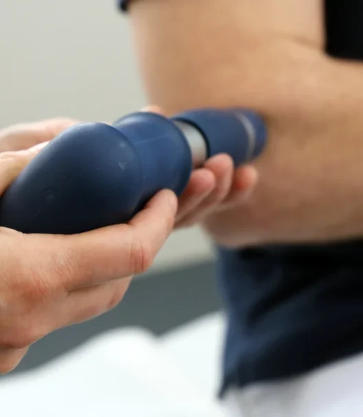

Back pain
The most common reason people first come in.
Learn moreWhat we do
Shockwave therapy in Fort Collins, used alongside chiropractic care for long-running tendon and heel problems that have stopped responding to rest and to everything else you have tried.

✅ Complimentary consultation for new patients
⚡ Drug-free, no downtime
The short answer
Shockwave therapy sends rapid acoustic pressure waves through the skin into a specific spot with a handpiece. The idea is to stir up a stalled area and prompt the body to get on with repairing it. It is drug-free, non-invasive, and needs no downtime, and it is aimed squarely at long-running tendon and heel problems rather than at everyday aches. Unlike most of what we do it is not especially comfortable while it is happening, and we would rather you heard that from us first.
Shockwave is one of the more interesting tools we have and one of the easiest to oversell. Here is the grounded version: what it actually is, what it feels like, the problems it genuinely suits, and where the evidence is stronger and weaker.
A handpiece is pressed against the skin over the problem area and delivers a rapid series of acoustic pressure waves into the tissue below. It is mechanical energy rather than electrical, and nothing enters the body. You will hear a firm tapping and you will feel it clearly.
The thinking is that a tendon or fascia sore for months has settled into a stalled state, where the normal repair process has quietly given up. The waves are used to interrupt that and prompt the area to start responding again. We use it as one part of a plan, alongside the hands-on work and the loading that rebuild the tissue properly.
This is the one we reach for when something has been going on for months rather than days, and when rest, movement, and hands-on work have taken it as far as they will go on their own.
It is a poor fit for a fresh injury, for general stiffness, and for pain that is not coming from tendon or fascia at all. There are also situations where we would not use it, including pregnancy, over a known clot, over an active infection, or near a growth plate in a child. A short check before we begin settles all of that.
Somewhat, and we would rather be straight about it than have you surprised. Most people describe a strong, rapid tapping that is uncomfortable while the handpiece is over the sore spot, particularly in the first minute. It is brief, we can adjust the intensity as we go, and it usually eases off during the session itself. Nobody should be gritting their teeth through it, and if you are, we change something.
Yes, for the right problem. For long-standing heel pain and a number of tendon complaints the evidence is genuinely encouraging, and shockwave is among the best supported options we offer for them. What makes the difference is matching it to the conditions it actually suits, and that is exactly what the first visit settles.
We locate the exact sore spot, apply a little gel, and work the handpiece over the area for a few minutes. You are in and out quickly and can drive, work, and carry on as normal afterwards. The area can feel tender or slightly achy for a day, which is expected. Shockwave is usually done as a short series a week or so apart rather than as a one-off, and we review whether it is earning its place as we go.
Coverage for shockwave varies by plan and it is often not covered at all. We cannot promise a specific outcome or what your insurance will pay. What we can promise is an honest read on whether your problem is the kind shockwave actually suits, and a straight answer if it is not.
Start with a complimentary consultation. Come as you are, we will take it from there.
Book your first visitIt is normally a short series spaced about a week apart rather than a single visit, because the response builds over time. We review as we go and stop if it is not earning its place, rather than committing you to a block up front.
Laser is light energy and you feel a gentle warmth; shockwave is mechanical pressure and you feel a firm tapping. Laser tends to suit a generally irritated area, while shockwave is aimed at a specific, long-standing tendon or heel problem. They are used for different jobs rather than as alternatives to each other.
It has a good safety record for the problems it suits when done by someone trained to use it. The area can be tender for a day afterwards, which is expected. There are situations where we would not use it, including pregnancy, over a known clot or an active infection, and near a growth plate in a child, which is what the check beforehand is for.
Yes, and it usually works best that way. Shockwave is aimed at the stubborn spot itself, while the rest of your care addresses the movement and loading that let it get overloaded in the first place. On its own it tends to be a shorter-lived win.